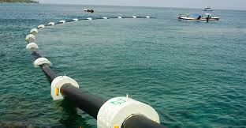
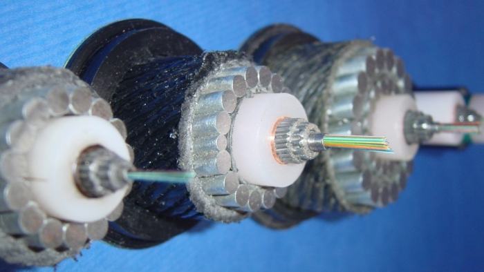
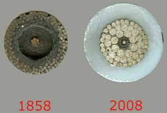

Introdução
O que é a conexão internacional?
Mapa dos cabos submarinos
A conexão internacional se refere a toda a estruturação que foi feita para conectar os continentes entre si,com foco na comunicação,possibilitando uma maior rapidez na transmissão de informações,e,posteriormente,permitindo o estabelecimento da internet em todos os continentes (com exceção do continente Antártico)
Para que servem os cabos submarinos
(intercontinentais) e do que são compostos?
Os cabos submarinos foram criados para comunicação na metade do século XIX,e conforme o tempo foi passando,eles começaram a utilizar esses cabos para o compartilhamento da recém criada internet,tendo importância tão grande para o funcionamento da internet que ela não consegue funcionar sem esses cabos
Cabo submarino que vai dos EUA ao Brasil
Estes cabos são feitos de fibras ópticas para a transmissão de dados (dados de internet), condutores de cobre para a passagem de energia e são cobertos por um tipo de proteção com diversas camadas de plástico e metais para suportar a pressão,possíveis movimentos de água ataques de peixes e etc.
Como funcionam os cabos submarinos?
No caso de cabos submarinos,a grande maioria dos cabos é composto de fibra óptica, que utiliza lasers de uma extremidade para disparar dados a velocidades extremamente rápidas em fibras de vidro muito finas para receptores na outra extremidade do cabo. O núcleo do cabo é composto pelas fibras finas de vidro.
Tipos de cabos que já existiram:
-
Metálico
- O primeiro cabo que surgiu,foi usado para comunicação telefônica
no geral,criado em no meio do século XIX.É composto
principalmente por fibras de cobre no seu núcleo.Só conseguia
realizar comunicação Half-Duplex e utilizava correntes elétricas para
transmissão de dados. -
Coaxiais
- Foi criado em 1956,durou pouco tempo,tinha banda maior e
consequentemente maior transmissão de dados,composição semelhante,
mas o principal,realizava comunicação Full-Duplex. -
Fibra óptica (tipo mais usado agora)
- Surgiu nos anos 80,testado primeiramente em 1982.Tinha
maior evasão/tranmissão de dados e utilizava raios laser para
transmissão de dados,fato este que posteriormente tornou possível
compartilhar dados de internet por este tipo de cabo.
Estruturação,históricos e padrões de instalação
Evolução da estrutura dos cabos submarinos
Os cabos submarinos começaram de maneira super limitada,os primeiros cabos,Metálicos